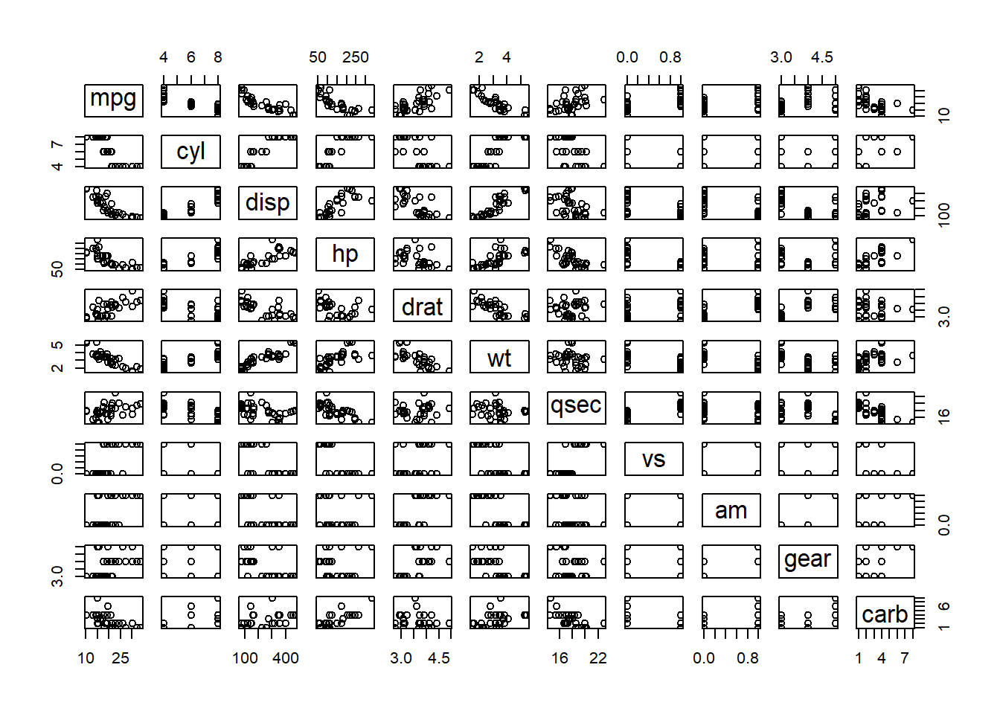

flowchart LR
A[Hard edge] --> B(Round edge)
B --> C{Decision}
C --> D[Result one]
C --> E[Result two]
aprender quarto
Quarto
Quarto enables you to diferents files and others weave together content and executable code into a finished document. To learn more about Quarto see https://quarto.org.
superscript2 / subscript2
strikethrough
verbatim code
encabezado 1
encabezado 2
encabezado 3
encabezado 4
encabezado 5
encabezado 6

unordered list
- sub-item 1
- sub-item 2
- sub-sub-item 1
item 2
Continued (indent 4 spaces)
- ordered list
- item 2
- sub-item 1
- sub-sub-item 1
- sub-item 1
- A list whose numbering
continues after
- an interruption
- A list
- Followed by another list
- term
- definition
| Right | Left | Default | Center |
|---|---|---|---|
| 12 | 12 | 12 | 12 |
| 123 | 123 | 123 | 123 |
| 1 | 1 | 1 | 1 |
code1 + 11 + 1run.py
codeinline math: \(E = mc^{2}\)
page 1
page 2
This content can be styled with a border
This is some text
This is good
This does not work!
Blockquote
Div
Line Block
Spaces and newlines
are preserved
Spaces and newlines
are preserved
To print, press Shift-Ctrl-PShift-Ctrl-P. To open an existing new project, press .
endash: –
emdash: —
cifras

This is illustrated well by Figure 3.
For a demonstration of a line plot, see ?@fig-line-plot.


Paneles de figuras

plot(cars)
plot(pressure)

plot(cars)
plot(pressure)

plot(cars)
plot(pressure)
plot(mtcars)


List One
- Item A
- Item B
- Item C
List Two
- Item X
- Item Y
- Item Z
# Some codeSome text that should be laid out below the code
tablas
| Default | Left | Right | Center |
|---|---|---|---|
| 12 | 12 | 12 | 12 |
| 123 | 123 | 123 | 123 |
| 1 | 1 | 1 | 1 |
| fruit | price |
|---|---|
| apple | 2.05 |
| pear | 1.37 |
| orange | 3.09 |
| fruit | price |
|---|---|
| apple | 2.05 |
| pear | 1.37 |
| orange | 3.09 |
| fruit | price |
|---|---|
| apple | 2.05 |
| pear | 1.37 |
| orange | 3.09 |
| Col1 | Col2 | Col3 |
|---|---|---|
| A | B | C |
| E | F | G |
| A | G | G |
See Table 1.
| Col1 | Col2 | Col3 |
|---|---|---|
| A | B | C |
| E | F | G |
| A | G | G |
| Col1 | Col2 | Col3 |
|---|---|---|
| A | B | C |
| E | F | G |
| A | G | G |
See Table 2 for details, especially Table 2 (b).
library(knitr)
#| label: tbl-cars
#| tbl-cap: "Cars"
#| tbl-colwidths: [60,40]
kable(head(cars))| speed | dist |
|---|---|
| 4 | 2 |
| 4 | 10 |
| 7 | 4 |
| 7 | 22 |
| 8 | 16 |
| 9 | 10 |
library(knitr)
kable(head(cars))
kable(head(pressure))| speed | dist |
|---|---|
| 4 | 2 |
| 4 | 10 |
| 7 | 4 |
| 7 | 22 |
| 8 | 16 |
| 9 | 10 |
| temperature | pressure |
|---|---|
| 0 | 0.0002 |
| 20 | 0.0012 |
| 40 | 0.0060 |
| 60 | 0.0300 |
| 80 | 0.0900 |
| 100 | 0.2700 |
| Fruit | Price | Advantages |
|---|---|---|
| Bananas | $1.34 |
|
| Oranges | $2.10 |
|
| Header 1 | Header 2 |
|---|---|
 |
Regular output |
HTML Tables Example
| Header 1 | Header 2 |
|---|---|
| Regular output |
videos
library(knitr)
Note
Note that there are five types of callouts, including: note, warning, important, tip, and caution.
Tip with Title
This is an example of a callout with a title.
Expand To Learn About Collapse
This is an example of a ‘folded’ caution callout that can be expanded by the user. You can use collapse="true" to collapse it by default or collapse="false" to make a collapsible callout that is expanded by default.
Pay Attention
Using callouts is an effective way to highlight content that your reader give special consideration or attention.
callout-appearance: simple
Pay Attention
Using callouts is an effective way to highlight content that your reader give special consideration or attention.
library(tidyverse)
library(palmerpenguins)
1penguins |>
2 mutate(
bill_ratio = bill_depth_mm / bill_length_mm,
bill_area = bill_depth_mm * bill_length_mm
)- 1
-
Take
penguins, and then, - 2
- add new columns for the bill ratio and bill area.